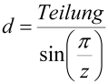
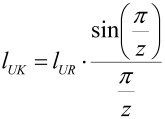

|
|
|


多边形效应
计算链条时，必须同时考虑分度圆和中心距的多边形效应。
- 分度圆公式：
 | (54.1) |
- 另参见 [12] 公式 26/46
- 中心距公式：
链轮上回环的长度与 V 带/同步带使用的公式不同，具体如下：
 | (54.2) |
- lUK：链条回环长度
lUR：V 带回环长度
English Original
Polygon effect
When calculating chains, you must take the polygon effect into account both for the reference circle and the center distance.
- Formula for the reference circle:
(54.1) |
- (see also [12], equations 26/46)
- Formula for the center distance:
The length of the loop on the sprocket differs as follows from the formula used for V-belts/toothed belts:
(54.2) |
- lUK: Length of loop for chains
lUR: Length of loop for V-belts